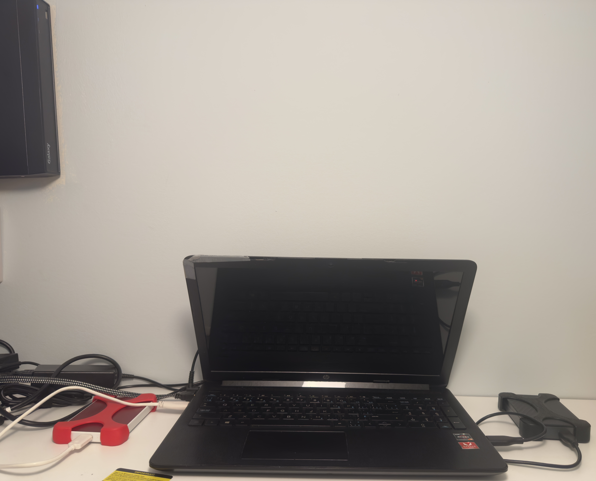
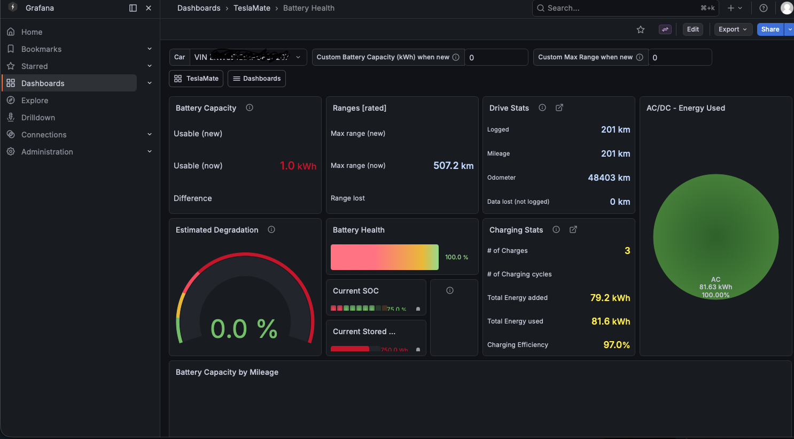
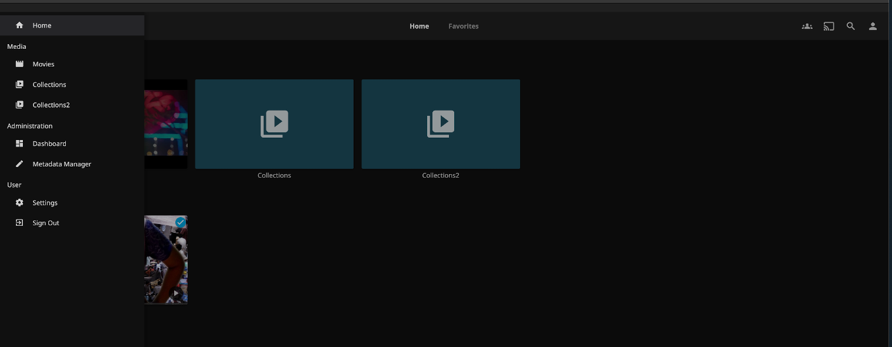
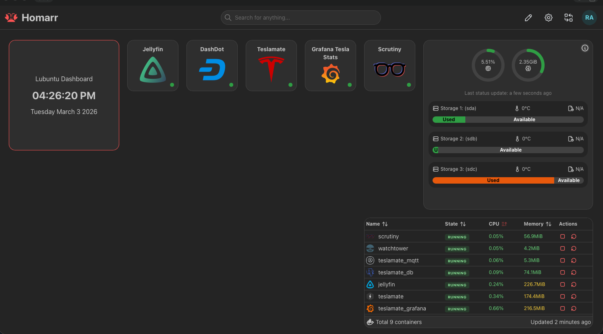
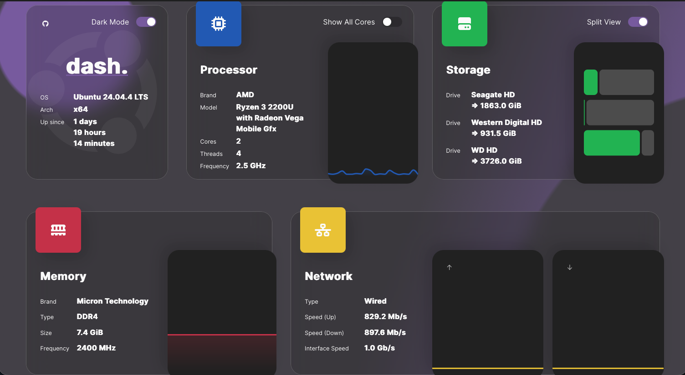

Personal infrastructure build focused on storage reliability, private services, and hands-on systems administration.
Host: HP Laptop Notebook
Specs: CPU: Ryzen 3 2200u, No dedicated GPU, Ram: 8GB DDR4
Conectivity: 1GB Ethernet, 3x USB 3.0, 1x HDMI, 1xSD card reader
Internal Drive: WD Hard Drive 1TB
Storage: 1× WD Passport 4TB, 1× Seagate SlimBackup Plus 2TB

OS: Lubuntu
Containers: Docker
Core Services: Jellyfin, TeslaMate, Grafana, MQTT, PostgreSQL (TeslaMate DB)

Used TeslaMate to capture driving + charging data and Grafana dashboards to visualize trends over time.

Jellyfin for organizing and streaming my library across devices (direct play + remote access as needed).

Homarr dashboard to keep all services organized with quick links and status visibility.

DashDot for a clean overview of CPU, memory, storage, and system uptime at a glance.